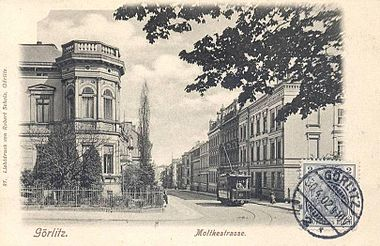
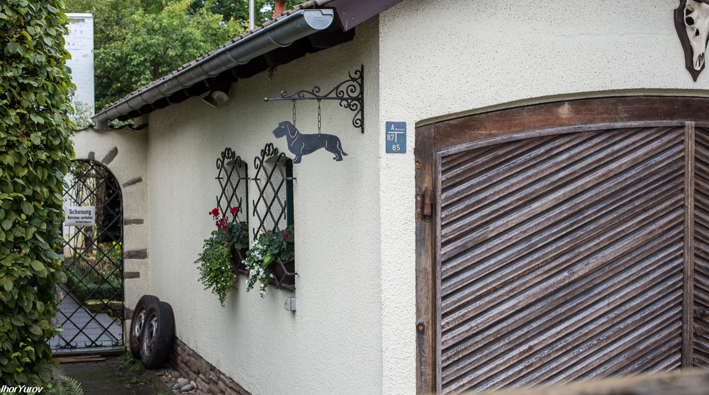

Аэропорт Николая Коперника, Вроцлав
12/11/2017

Пока я занимаюсь киевскими трамваями, расскажу-ка о моем путешествии из Аэропорта (Вроцлав) до жд вокзала. Вроцлавский аэропорт Коперника (польск. Port Lotniczy Wrocław im. Mikołaja Kopernika) - международный аэропорт, на юго-западе Польши, расположен примерно в 10 километрах от центра города. Читать далее...
Вроцлавские трамваи
01/11/2017

Вроцлав имеет самую старую трамвайную систему в Польше. Трамвай появился здесь 10 июля 1877 года. Сегодня насчитывается 23 маршрута, общей протяженностью 258,2 км. Общий парк 410 вагонов, 6 трамвайных депо и 20 разворотных колец. Ширина колеи 1435 мм. Читать далее...
Особенности Европейского Парадного Входа
15/10/2017

Когда я только готовился к поездке в Ганновер (Германия), то в мыслях хотелось обойти чуть ли не каждую улицу этого города, заглянуть хоть на чуть-чуть в каждый двор. Хотелось просто проглотить этот город как рюмку коньяка, аппетитно съесть его как спелый персик, так чтобы сок сливался вниз по губам и подбородку. Уж так я изголодался, да. Читать далее...
Живые изгороди как дополнение городского уюта
12/10/2017

Уже не одно столетие люди создают живые изгороди. Они одновременно и ограждают и украшают территорию. Это самый недорогой вид ограды, когда не требуется никаких строительных материалов. Правда, надо подождать несколько лет, пока растения вырастут. Посмотрите какую красоту и какой уют создают в немецком Ганновере. Читать далее...
Рай начинается с цветочных балконов (Ганновер, Германия)
08/10/2017

Мы все думаем о рае. Если в твоей квартире или доме есть балкон, ты просто обязан поставить там живые цветы. Все! Ты в раю. Чего еще можно желать от этой жизни? Читать далее...
Плюсы и минусы. Велодорожка, пр.Победы, Киев. Часть первая
01/10/2017
Велодорожка о которой я хотел рассказать, находится в Киеве на пр. Победы. Начинается она при въезде в город по Житомирской трассе. Как раз с того места, где на фото по каким-то непонятным причинам лежит чей-то оставленный на всеобщее обозрение резиновый скат. Читать далее...
Городские велодорожки (Германия, Ганновер). Часть вторая
29/09/2017
К сожалению, по не до конца понятным причинам, у нас в стране отсутствуют полноценные велодорожки. Пока что. Но это дело поправимо. При хорошей организации и некотором финансировании все можно исправить в лучшую для всех нас сторону. Читать далее...
Городские велодорожки (Германия, Ганновер). Часть первая
24/09/2017

Значит так. Велодорожки. Приезжая в Германию, удивляешься огромному количеству велосипедов в городе. Еще бы не ездить на велосипеде. Этому есть свои предпосылки. Читать далее...
Европа-рай для велосипедиста
04/09/2017

Сегодня ехал в маршрутке и думал над подходящим названием этого поста. Чтобы как-то выбрать одно название из нескольких, пришлось делать записи. Открыл в телефоне блокнот и настрочил несколько вариантов Читать далее...
Где НАШИ автобусы?
01/09/2017

В Ганновере, в качестве городского общественного транспорта, кроме Метро используют автобусы. Большие и просторные, односекционные и чаще всего сочлененные (гармошки). И при том, что это полумиллионный город. Читать далее...
Как делают в Германии удобные города для жизни? Часть вторая
29/08/2017

Косяки встречаются и у немцев, как этот согнутый дорожный знак или вот ящик, уставший висеть на трубе. Или незаконченный край тротуара, напоминающий, что здесь что-то не доделано. Но все же, на общем фоне такие моменты скорее являются исключениями из правил, чем сами правила. Читать далее...
Жах! Танцы экскаваторов на Крещатике 27 августа. Часть вторая
27/08/2017
Ой, совсем забыл сказать о самом главном трюке - как можно открыть экскаватором бутылку. В специальном лотке были установлены бутылки с запечатанными пробками. Читать далее...
Жах! Танцы экскаваторов на Крещатике 27августа. Часть первая.
27/08/2017
Сегодня "Киевводоканал" зажигал на главной улице страны, на Крещатике. Как сказал ведущий этого Шоу, это был конкурс мастерства экскаваторщиков. Читать далее...
Как делают в Германии удобные города для жизни? Часть первая.
25/08/2017
Первое, что бросается в глаза, когда приезжаешь в Германию, это то, что здесь власти создают удобства для людей, в том числе для инвалидов. Несмотря на то, что человек сидит в инвалидном кресле, ему тоже хочется жить как и всем другим. Читать далее...
Что же все-таки это - скоростной трамвай или метро? Часть вторая. (Ганновер)
24/08/2017
Вторая и третья серии трамваев в Ганновере, эксплуатирующихся сегодня, это TW2000 и TW2500. Они получили от местных жителей прозвище SILBERPFEIL, что означает “серебряная стрела”. Теперь вместо полностью зеленой окраски осталась зеленая полоса. Читать далее...
Что же все-таки это - скоростной трамвай или метро? Часть первая. (Ганновер)
23/08/2017
Этот стрит-арт я встретил рядом с центральным ЖД вокзалом в Ганновере, Нижняя Саксония, Германия. На нем трамвай серии TW 6000. Так вот, хочу рассказать о сегодняшней транспортной системе Ганновера. Читать далее...
Как я получил свой первый биометрический паспорт
13/08/2017

Это было накануне 11 июня 2017 года, того дня когда должен был официально стартовать безвиз с странами ЕС и Шенгенской зоны. Читать далее...
Ореховатские пруды (Киев)
18/07/2017
Открыл для себя замечательное место, где можно отвлечься от городского шума и суеты и побыть с природой. Место сие находится в двух шагах от станции метро "Голосеевская". Читать далее...